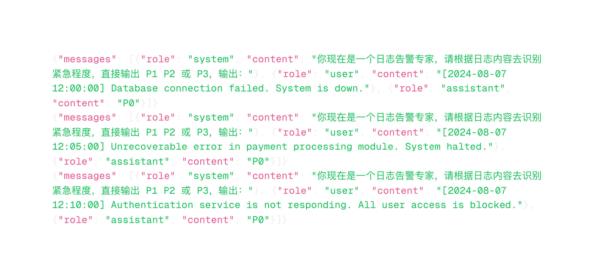

Fine-tuning 实战
微调通过输入给大模型更多的样本数据来改进模型的表现，使其在一些特定的任务上输出更好的结果。
使用场景：
- 要求输出特定的风格和格式等
- 提高输出的可靠性
- 纠正无法遵循复杂提示语的问题
- 执行一项难以用语言表达的新技能或任务
Fine-tuning 日志分析专家
使用真实的已标注数据进行 Fine-tuning，使模型具备判断日志故障优先级的能力
需要将表格处理成如下的格式：
执行：
import csv
import json
import os
def convert_csv_to_jsonl(csv_file_path, jsonl_file_path):
with open(csv_file_path, mode="r", encoding="utf-8") as csv_file:
csv_reader = csv.DictReader(csv_file)
with open(jsonl_file_path, mode="w", encoding="utf-8") as jsonl_file:
for row in csv_reader:
log = row["log"]
priority = row["优先级"]
jsonl_entry = {
"messages": [
{
"role": "system",
"content": "你现在是一个日志告警专家，请根据日志内容去识别紧急程度，直接输出 P0 P1 或 P2，输出：",
},
{"role": "user", "content": log},
{"role": "assistant", "content": priority},
]
}
jsonl_file.write(json.dumps(jsonl_entry, ensure_ascii=False) + "\n")
csv_file_path = os.path.join(os.path.dirname(__file__), "data", "log.csv")
print(f"csv_file_path:{csv_file_path}")
jsonl_file_path = "log.jsonl"
print(f"jsonl_file_path:{jsonl_file_path}")
convert_csv_to_jsonl(csv_file_path, jsonl_file_path)

lesson/module_4/demo_6/process_data.py
Fine-tuning 数据格式：jsonl
包含 system prompt、user、assistant每行代表一条日志标注数据
# 02finetune.py
from openai import OpenAI
client = OpenAI()
# 上传微调数据
file_name = client.files.create(file=open("log.jsonl", "rb"), purpose="fine-tune")
file_id = file_name.id
print("file_id is: ", file_id)
# 创建微调任务
finetune_job = client.fine_tuning.jobs.create(
training_file=file_id, model="gpt-4o-mini-2024-07-18"
)
job_id = finetune_job.id
print("job_id is: ", job_id)
流程：
- 准备微调数据
- 上传微调文件
- 创建微调任务
- 获取微调后的模型 ID
注意：
- 微调时间取决于微调数据量大小，耗时较长
- 可微调模型包括：gpt-4o-mini-2024-07-18、gpt-3.5-turbo-0125 等
Fine-tuning 日志分析专家-推理
# 04chat.py
from openai import OpenAI
client = OpenAI()
model_id = "ft:gpt-4o-mini-2024-07-18:he3::9tbKC81t"
completion = client.chat.completions.create(
model=model_id,
messages=[
{
"role": "system",
"content": "你现在是一个日志告警专家，请根据日志内容去识别紧急程度，直接输出 P1 P2 或 P3，输出：",
},
{"role": "user", "content": "Disk I/O error"},
],
)
print("ChatGPT resp: ", completion.choices[0].message.content)